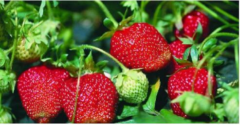

又到一年采摘季 莫忘农残这件事
2017-04-01 10:00:58 来源: 综合 作者:
风暖鸟声碎，日高花影重。阳春三月正是采摘草莓的好时节。每年这个时候，很多家长都喜欢带孩子去体验一下农场的种植生活，收获孩子童真的欢笑。很多年轻的朋友也喜欢去感受下大自然的美好，缓解一下工作的疲累。

(图片来源于网络)
但是近日，网上一篇名为《吃了没洗过的草莓原来这么可怕!》的文章却引起了广大消费者的恐慌。文章中提到，由于吃了没洗过的草莓，两名小朋友感染了诺如病毒，导致严重腹泻，甚至还引发了高烧。
农场里的草莓不都是“有机栽培，纯天然，无农药，放心食用”吗?怎么还会感染病毒。 其实，诺如病毒仅仅是威胁人难受一下，各种果蔬农药残留，才是我们健康的最大威胁。
据了解，诺如病毒一般都是由于饮食不净或餐具不洁引起的，通常会伴有呕吐、腹泻、发烧等症状。只要对症处理，一般不会有生命危险。但农药残留却是个“隐君子”，初摄时一般不会引发严重的症状，但在人体内长期蓄积滞留却会引起慢性中毒，诱发许多慢性疾病。
据首都医科大学附属北京朝阳医院急诊科主任、主任医师、教授郭树彬介绍：由于胃肠道消化系统钻膜血管丰富，胃壁皱褶多，易存留毒物, 残留的农药容易积聚在其中, 严重时会引起慢性腹泻恶心等症状。如果残留农药进入体内，肝脏就会不停地工作来分解这些毒素长时间的超负荷工作会引起肝硬化、肝积水等病变。而长期食用带有残留农药的菜，农药被血液吸收后, 直接损害神经元，导致身体某些器官免疫力下降，出现经常性感冒、头晕、心悸、盗汗、健忘等。更为重要的是，残留农药中常常含有甲胺磷、对硫磷、氯化苯等有害物质，可促使全身各组织内细胞发生癌变。
然而，民以食为天，蔬菜和水果是人们获取各种维生素和微量元素的重要来源，也是每个家庭一日三餐必不可少的新鲜食材。那么，如何去除果蔬农残就成为了困扰广大消费者的一个难题。
经过总结分析，我们发现居家常用的去农残方法无外乎以下几种：
1、 用流动的自来水连续冲洗。这种方法只能去除一小部分果蔬表面的病毒、农药及其它污染物。残留在果皮表面褶皱里的农残根本无法清除干净。
2、 把果蔬浸在果蔬清洗剂、淡盐水、酵素或者淘米水中浸泡。这种办法是可以分解一部分存留在果蔬表面的农药成份，但浸泡时长和浓度不合适，也不会适得其反，而清洗剂等含留的化学成分，也会对果蔬造成二次污染。
3、 用含有臭氧等具有杀菌消毒功能的果蔬净化机洗涤。这种方式，看似比较直接有效，但也有其家提醒：臭氧可能破坏营养成分。据中山大学学报曾刊登过的一项实验记载，以浓度为1.4毫克/升的臭氧水处理小白菜30分钟，67%的脱氢维生素C被破坏，而总维生素C也损失近30%。